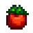

Pizza

It's popular for all the right reasons
Pizza is a cooked dish. You can prepare this dish in the kitchen of your home when you have the upgraded farmhouse.
This recipe is unlocked by watching The Queen of Sauce on TV on the 7th of Spring in Year 2. Pizza can also be purchase daily at The Stardrop Saloon for 600g.
Ingredients
 1 Wheat Flour
1 Wheat Flour1 Tomato
 1 Cheese
1 CheeseInformation
Buff(s) - N/AEnergy - 150
Health - 67
Sell Price - 300g